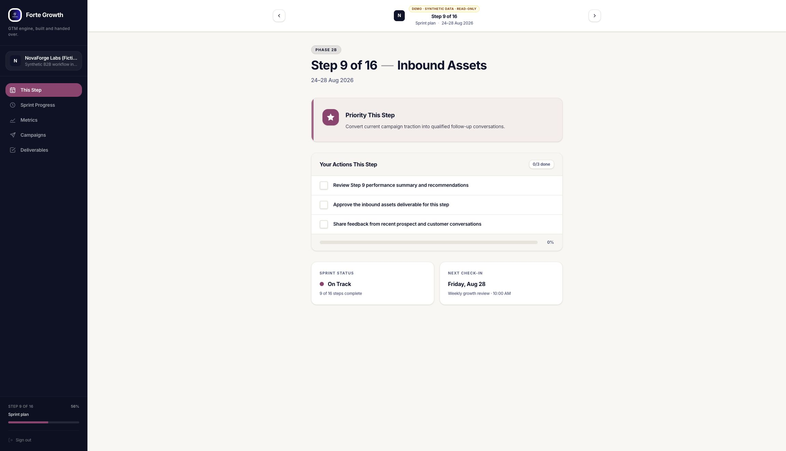

PRODUCT / GTM / CLIENT EXPERIENCE
Client GTM portal
A shared workspace for the next action, campaign performance and client delivery. My work connects customer research and GTM planning with AI-assisted implementation.

Portal screenshots show the public synthetic demo. Case studies explain my contribution.